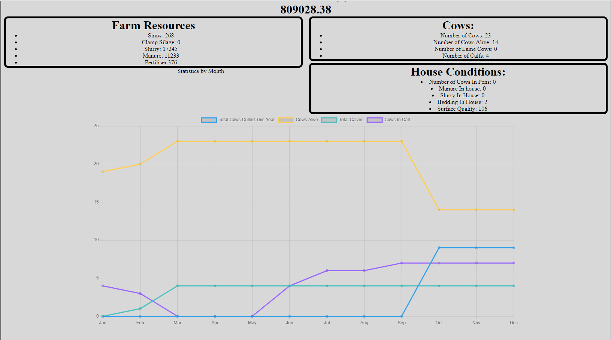

Progress So Far
So far I believe I have implemented the majority of the main events on a beef farm
that may contribute to monetary gain or loss. The list of these implemented features
can be found below.
Features
Winter Events
- Grass in fields grows every day dependant on the time of year and amount of fertiliser applied
- Every day each cow consumes a slightly different amount of dry matter based off the cows attributes
- The cow then puts on weight dependant on it's attributes and the amount it ate
- Each cow dungs a certain amount each day when in houses
- Each employee has a different probability of carrying out the daily jobs dependant on their contract
type and if the job has already been done or not.
- The daily jobs during winter that have been implemented include:
- Feeding Cows - the employee moves silage from the silage clamp to the feeding area
- Scraping Cows - The employee moves the slurry and manure from the cattle house to their respective storage areas
- Bed Houses - The employee moves the straw(or other bedding material) from it's storage location to the cattle's shed
both this and scraping the cows increases the surface quality. Reducing the likelyhood of a cow going lame.
- Checking any cows for early signs of calving
- If a cow does seem close to calving the employee will move the cow to a calving pen
- If the cow starts calving there is a chance of it needing assistance, in which case the employee will have to assist
- There is a small chance of a calf being still born
- Once a calf is more than 5 days old mother and calf is moved to a field
Summer Events
- When in the fields, any cow not marked for culling has the chance to be served by a stock bull
- If the grass runs out in a field the employees move the cows from that field to a field that does have enough grass
- If a field is low on fertiliser then an employee who has a license to spread fertiliser will spread fertiliser
- If the field is for silage, slurry will be spread instead in order to save money
- Once into November all employees will move all cows into the cattle houses for winter
- Once into April, all employees move all remaining cows out of the cattle houses into the field
- 3 times per year, when the grass is long enough, any fields marked as silage ground will be harvested by contractors
and the silage put into the clamp.
- If there is more silage than the clamp will hold contractors will be paid to make silage bales, which costs more.
General Events
- At the start of every month the manager or owner pays the wages
- At the start of every year, machinery depreciation costs are calculated and removed
- At the start of every year, insurance costs are removed
- Every day there is a chance of an employee looking through the cattle and checking if any are ready for the abbatoir
- If a cow is marked to be culled, has reached the target weight or is over the age limit before prices are cut then the
animal goes to the abbatoir. The farm is then paid appropriately and also pays haulage fees to the abbatoir.
- If the farm is low on bedding or fertiliser there is a chance each day that a manager or owner will restock these supplies.
Only a manager or owner may do this.
- If a cow becomes lame it will be marked to be culled
- The chance of a cow becoming lame is dependant on the surface quality, which varies depending on the cleanliness.
The results of the simulation are represented on the webpage both listed as data and represented graphically.
These graphs show yearly and monthly data which is refreshed every time the run simulation button is pressed.

The data used within the simulation has not as of yet been fitted to real world results. This results in the output of the program
not being particularly accurate or useful currently. You can look to the future plans section to see how I intend to remedy
these issues
Every time a function edits the data within the json, a simple typo can easily change or even delete all of the data unintentionally.
I.e. the data becomes corrupt. Therefore, at the end of every function a validate function is called. This function checks that data
being produced by the simulation doesn't become corrupt. If the data is corrupt in some way the function will output to the console
which data is being corrupted and which function is causing the corruption. Therefore the simulation will constantly test and debug
itself as it runs. New tests can be added to the function as new functions are created in order to more specifically check that what
the new function is changing is changed properly.